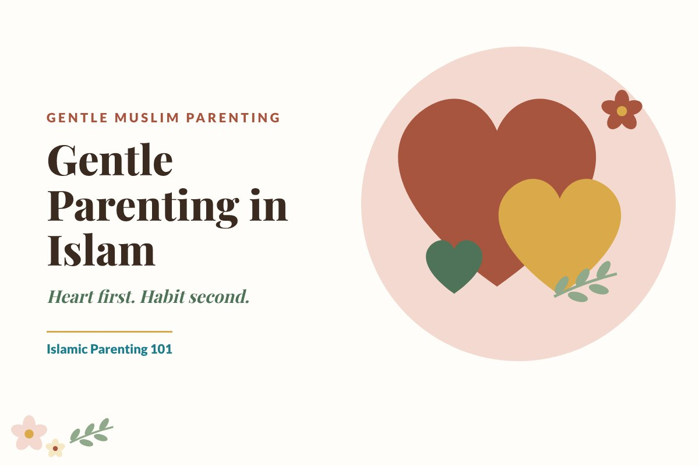
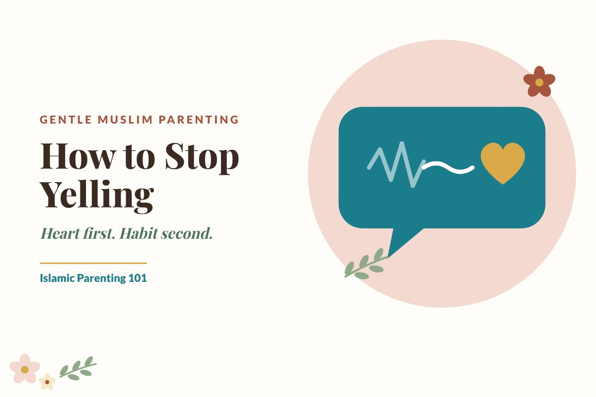

Part of the guide: Gentle Parenting in Islam: The Complete Guide for Muslim Moms
Toddler Tantrums: A Gentle Islamic Approach for Muslim Moms

You are at the supermarket. You said no to the biscuits. Your two-year-old has thrown herself on the floor, face red, screaming as if the world has ended. People are looking. Your heart is pounding. Part of you wants to give in, part wants to scoop her up and run, and part wants to disappear.
If this is your life right now, toddler tantrums are not a sign that you are failing. They are a normal, even healthy, stage of brain development. And the way the Prophet ﷺ treated little children gives us a calm, loving path through them. This article is part of our guide Gentle Parenting in Islam.
Why Toddlers Have Tantrums
A toddler’s feelings are enormous and their tools are tiny. The part of the brain that handles self-control and language is still under construction, while the emotional part is fully switched on. So when they feel frustrated, tired, hungry, overstimulated or powerless, they cannot say “I’m upset because I wanted the red cup.” They scream, drop to the floor, hit or throw.
A tantrum is not manipulation or “being naughty.” It is an overwhelmed nervous system asking for help. Common triggers:
- Hunger or tiredness (the biggest two)
- Transitions, such as leaving the park or switching off a show
- Wanting independence (“Me do it!”) but being unable to
- Being told no
- Too much noise, people or screen time
- Big changes: a new baby, a new place, a new routine
The Prophetic Mindset: Mercy and Patience
The Prophet ﷺ gave children space to be children. He shortened his prayer when he heard a baby cry, because he knew the mother’s heart would be troubled (Sahih al-Bukhari and Sahih Muslim). He carried his granddaughter Umamah while he prayed (Sahih al-Bukhari and Sahih Muslim). He said, “He who shows no mercy will not be shown mercy” (Sahih al-Bukhari and Sahih Muslim).
And Allah says, “Indeed, Allah is with the patient” (Quran 2:153). Patience with a screaming toddler is a form of worship. Each time you stay calm, you earn the company of Allah’s help.
The Calm Plan: Before, During and After
Before the tantrum: prevent what you can
- Keep the basics solid: regular meals, snacks and sleep. Many tantrums are really “hungry” or “tired” in disguise.
- Give warnings and routines: “Five more minutes, then we’ll put on our shoes.” Use a timer or a song.
- Offer choices: “Do you want the blue cup or the green cup?” Two choices give a sense of control.
- Say yes when you can: save your “no” for what really matters.
- Say Bismillah before tricky moments, like leaving the house or going to the shops. It reminds you to be calm too.
During the tantrum: stay, soothe, wait
- Check safety first. Move them gently away from danger.
- Calm yourself. Breathe. Say “A’udhu billah” quietly. If you are standing, lower yourself to their level (the Sunnah’s advice about sitting down when angry also helps parents).
- Name the feeling in a few words: “You’re so mad. You wanted the biscuit.”
- Stay near and keep your voice low and soft. Don’t lecture, bargain or reason mid-storm. A toddler in a meltdown cannot take in words.
- Hold the boundary kindly: “I won’t let you hit. I’m here when you’re ready.” If they want a hug, give it. If they don’t, sit nearby.
- Wait. Most tantrums pass in a few minutes.
After the tantrum: reconnect and teach
When they’ve calmed down, hug them and use very short words: “That was big. You were so angry. Next time we can say ‘help me’ or ‘I’m sad.’” Then move on. Don’t recap long stories or shame them. A calm child learns more in 30 seconds than in a 10-minute lecture.
What About Tantrums in Public?
Public tantrums feel worse because we imagine everyone is judging us. Most other parents have been there. Try these:
- Remove the audience. Move to a quiet corner, the car, or outside.
- Stay calm and quiet. Your quiet is your power.
- Skip the bribe. Giving in teaches that screaming works. Remain loving but firm.
- Leave if you need to. It’s okay to abandon the trolley and go.
- Remember the du’a: “Hasbunallahu wa ni’mal wakeel” (Allah is sufficient for us and the best disposer of affairs, Quran 3:173). Say it silently to steady yourself.
What to Say (and Not Say)
| Instead of | Try |
|---|---|
| “Stop crying right now!” | “You’re really upset. I’m here.” |
| “You’re being ridiculous.” | “That felt so big for you.” |
| “If you don’t stop, no treats ever.” | “When you’re calm, we’ll choose together what to do next.” |
| “Good Muslims don’t scream.” | “We use gentle voices. Let’s practise together when you’re ready.” |
| “Why can’t you be good like your cousin?” | “You’re having a hard time. I love you.” |
Tantrums and Islamic Habits
Use du’a and dhikr as calm-down tools. After the storm, say “Bismillah” together and take three slow breaths. Children can learn to whisper “Alhamdulillah” when they feel better.
Keep salah and bedtime routines peaceful. A toddler who is forced to do religious acts through screaming can start to associate them with conflict. Keep them light, short and loving.
Model what you want them to learn. When you feel upset, say it aloud: “I’m feeling frustrated. I’m going to take a breath and say A’udhu billah.” Your toddler is learning emotional regulation by watching you.
By Age
| Age | What’s happening | What helps |
|---|---|---|
| 12–18 months | Frustration with limits, few words | Distract and redirect, teach simple signs, offer snacks and naps |
| 18 months–2 years | “No!” phase, wants independence | Offer choices, use simple words, set firm but kind limits |
| 2–3 years | Peak tantrums, big emotions | Name feelings, keep routine, stay calm and consistent |
| 3–4 years | Better language, still emotional | Talk after the storm, practise “calm-down” breathing, use stories and picture books |
Common Mistakes
- Giving in to stop the noise. It works for a minute and teaches the opposite of what you want.
- Punishing the feelings. Feelings are fine; only some actions are not.
- Reasoning mid-meltdown. Wait for calm.
- Taking it personally. The tantrum is not about you.
- Skipping your own care. A rested, fed and supported mother has far more patience. See Muslim Mom Burnout.
When to Seek Extra Support
Most tantrums are normal. Talk to your paediatrician or a child specialist if tantrums are very frequent or very long (regularly over 25 minutes), involve serious self-harm or injuring others, continue intensely beyond age four or five, or come with delays in speech, social skills or sleep. Early advice can be a great relief. Seeking help is part of taking the means.
Your One Step This Week
Choose one trigger, such as leaving the park or nap-time, and plan a calm response: a five-minute warning, two choices, and a short script. Practise it all week.
For more calm, practical scripts see my book Hearts Before Habits. You can also read How to Discipline a Child in Islam for the next stage, and the hub guide Islamic Parenting: The Complete Guide.
Author of Hearts Before Habits. I share gentle, Sunnah-rooted help for Muslim moms — heart first, habit second. About me · More posts
Get the free Calm Mama Starter Kit
4 printable cards for calmer days: phrases, Sunnah calm-down steps, a bedtime routine and a weekly planner.

This article draws on Hearts Before Habits — a complete Islamic parenting guide with scripts, du'as, printables and a 30-day plan.
See the book Free printables Recommended booksKeep reading

Gentle Parenting in Islam: The Complete Guide for Muslim Moms
Gentle parenting in Islam explained — what the Quran and Sunnah teach about mercy, boundaries and discipline, with real scripts for everyday moments.
Read the article →
How to Discipline a Child in Islam: Gentle, Firm and Fair
How to discipline a child in Islam without hitting or shaming — the Prophet's example, clear boundaries, fair consequences and scripts by age for Muslim moms.
Read the article →
How to Stop Yelling at Your Kids: 7 Sunnah Steps
How to stop yelling at your kids, the Prophetic way — 7 Sunnah steps to calm down before you correct, with real scripts for tired Muslim moms.
Read the article →